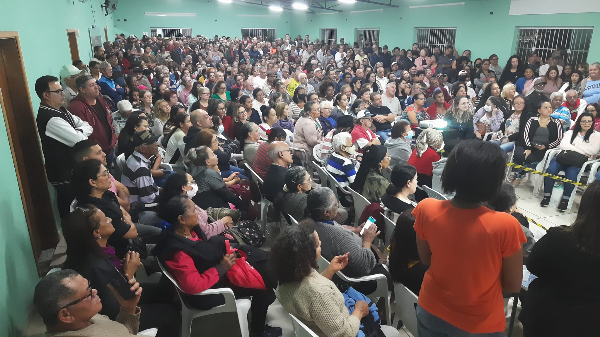
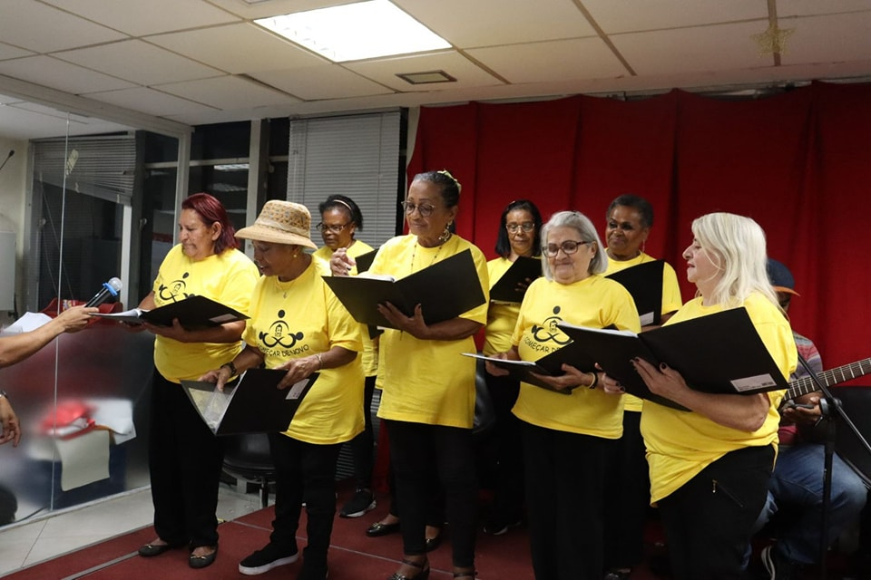
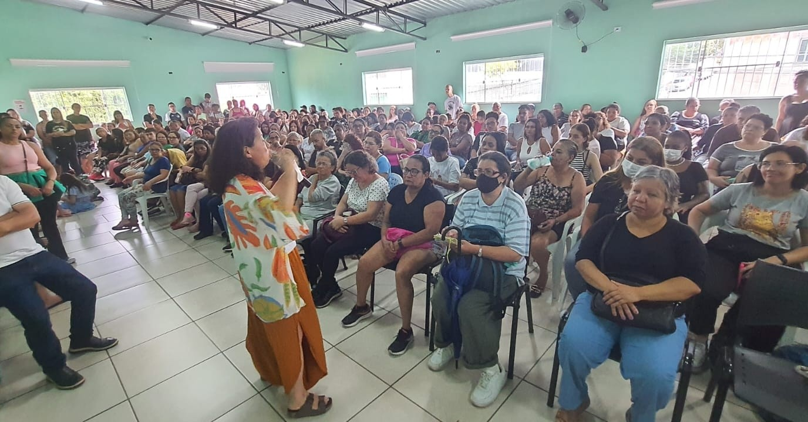

ATENÇÃO
O CENTRO DE PROMOÇÃO E INCLUSÃO SOCIAL 26 DE JULHO NÃO SOLICITA DOAÇÕES ATRAVÉS DE TERCEIROS E NÃO AUTORIZA QUE AS MESMAS SEJAM FEITAS ATRAVÉS DE TRANSFERÊNCIAS BANCÁRIAS PARA PESSOAS FÍSICAS, VOLUNTÁRIOS OU SEUS COLABORADORES Doe OficialmenteInclusão para todos.
O Centro de Promoção e Inclusão Social 26 de Julho (CPIS 26 de Julho) é uma organização não governamental (ONG) que atua na cidade de São Paulo e tem como missão promover a inclusão social, educacional e cultural de crianças, jovens, adultos e idosos em situação de vulnerabilidade social.



Missão
Promover a inclusão social e o desenvolvimento pessoal de pessoas vulneráveis, garantindo moradia digna, inclusão digital e bem-estar para crianças, adolescentes, jovens, adultos e idosos. Através de projetos e atividades, buscamos fortalecer laços familiares e comunitários, defender os direitos humanos e incentivar a formação profissional e o empreendedorismo.
Visão
Construir uma sociedade mais justa, igualitária e solidária, onde todos tenham as mesmas oportunidades de desenvolvimento, independentemente de suas condições socioeconômicas, com acesso a moradia digna e inclusão digital.
Valores
- Respeito à dignidade humana
- Compromisso com igualdade e justiça social
- Ética e transparência
- Solidariedade e cooperação
- Participação ativa e protagonismo das pessoas atendidas
- Parcerias com instituições e atores sociais
- Promoção da moradia digna e inclusão digital.
Venha até nós.
Rua George Bekesy, 7 - Fazenda da Juta, São Paulo - SP, 03977-015